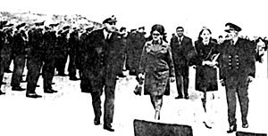
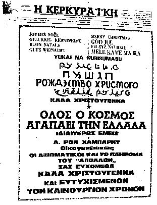
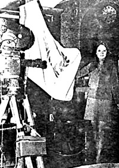

II. THE SPREAD OF THE GOSPEL
|
"The ship was cheered, the harbour cleared" ("The Ancient Mariner", S. T. Coleridge 1772-1834) |
|
"The ship was cheered, the harbour cleared" ("The Ancient Mariner", S. T. Coleridge 1772-1834) |
Diligently deciding on its priorities, Hubbard's Church selected the Harbourmaster, Marius Kalogeras, for its first convert. The forty-year old merchant marine commander was quick to grasp the message.
He quickly took the whole flotilla under his wing and allocated the "Royal Scotman" a choice berth in a secluded part of the newly extended quay normally reserved for fee paying cargo ships. "The Harbourmaster" reported Reuter, "has offered Hubbard all facilities, even going beyond those accorded to ordinary tourists."
|

|
These exceptional facilities included complete freedom of movement of all scientologists to and from the ships without formalities and, Reuter continues, "students can be seen in taxis going to and from the ship without being asked by harbour guards for their passports or passes or even being questioned by customs officers."
No-one was allowed to visit the ship without the Harbourmaster's permission and, indeed, I myself had difficulty to pass the security cordon of Hubbard and Harbour police to deliver a message which I had been instructed to convey to Mr. Lafayette Ron Hubbard to the effect that the British Home Secretary had declared him "persona non grata" in Britain.
On this occasion I was met at the gangway by a small boy aged about twelve with a very intent though far off expression on his face who politely but firmly inquired my business. I asked where I could find the captain. In all seriousness the lad insisted "I am the captain." Apparently the children take it in turns to act the role of different officers on the ship and are indoctrinated into actually believing they are really the character they happen to be portraying. After an interesting conversation with the lad, I was whisked away by one of the staff to the dirty and evil smelling bowels of the ship where I was introduced to an outsize female character known as "Super-Cargo", who looked as if she might have been a wardress in a Dickensian reformatory in a bygone age. 'Super-Cargo" signed a receipt for the letter and promised to get it delivered to Hubbard who was alleged to be away cruising on "Avon River". About a month later, the letter, which had been crudely opened and resealed, was returned to me with a note from "Super-Cargo" saying that Hubbard could not be traced, his whereabouts being unknown.
On a later visit to the ship to deliver another message confirming the Home Secretary's decision, I was elevated to the upper deck, perhaps in hope that this time I was the harbinger of good news. Here I was introduced to another captain, the attractive Hanna Eltringham, a 28 year old green-eyed blonde nurse from Rhodesia. Although Hanna looked as if she might have launched a thousand ships, she hardly appeared the type who would navigate one. She accepted the letter on behalf of El Ron explaining that he was asleep as he always works night shift. I was soon to learn that the "Royal Scotman" had three captains - the child student whom we have already met, the administrative captain, the sea captain, and, of course, there was also our Commodore "sleeping down below".
By injecting some £1,000 per day into the island's economy in respect of all the logistic requirements of the "Sea Org", as it is known, Hubbard soon made converts of the Corfu traders and merchants. At the same time he found it a simple matter to acquire the co-operation of the Corfu daily newspapers, the "Ephimeris ton Idisseon" and the "Kerkyraiki".
|

|
The main news items of these journals were devoted mostly to the thoughts of El Ron and the activities of his "Church". When, for example, Richard Crossman, Secretary of State for Social Services, announced in the House of Commons that the Government did not propose to hold an enquiry into the practice of scientology, the "Ephimeris ton Idisseon" heralded this decision with the headlines, "Dr. Hubbard gains a glorious victory in Britain."
Interviews with the press provided the ideal opportunity for El Ron to flatter* the Colonels as well as the Corfiots.
* Giving evidence at a South African Government appointed commission of enquiry into the scientology movement, Mrs. Margaret Nicholson, a former scientologist, stressed that Hubbard had always supported the policy of the governments of the countries where the movement operated to try and ingratiate himself with the authorities.
Thus, in Rhodesia, where the movement was later banned, he offered a reward for the capture of terrorists so that the Government would not 'kick him out'."
Here are a few gems:
However, the seed of the 'Gospel' did not always develop into fruition and indeed when it was planted on the doorsteps of the "Telegraph" Corfu's foremost newspaper it fell on very stony ground. Hubbard's tempting offer was not only flatly turned down, but Costas Daphnis, Corfu's shrewd, fearless and dedicated leading journalist, had other questions to ask Mr. Hubbard which he continued to pose until he was inevitably gagged by the Colonels in true dictatorial fashion, after telling Hubbard what he could do with his philosophy.Mr. Hubbard speaks to Ephimeris ton Idisseon. Q. Mr. Hubbard, as the international personality that you are, are you following the new situation in Greece and what do you think of the work of the present National Government?
A. The Government is the mirror of the people. Wherever I go and wherever the students go, the people continually say how safe they feel. The decision to form a company to establish its HQ offices here shows our confidence in Greece.
Q. I have been told, Mr. Hubbard, that you have read the whole of the new Greek Constitution from beginning to end. If that's true, what do you think of it?
A. Yes, I've read it with much interest. The rights of man have been given great care in it. I have studied many constitutions, from the times of unwritten laws which various tribes have followed, and the present Constitution represents the most brilliant tradition of Greek democracy. Out of all the modern constitutions the new Greek Constitution is the best.
Q. Mr. Hubbard, the professors, the students, the men and women of your school, are they satisfied by the conduct of our compatriots?
A. The people who live in the ship love so much the Corfiots that when I told them I was planning to leave for Piraeus to take on board some machinery I was bombarded by the protests of everybody so that I was obliged to promise to come back to Corfu.
Elsewhere, the 'Gospel' spread like wildfire. Today it seems not only amazing but utterly incredible that El Ron was able to cast his spell over such a large section of the cream of Corfu society. The build-up of his image was fabricated by a top grade public relations team of smooth cultured and professional experts under the direction of Australian-born Delwyn Sanderson, a glamorous redhead who might have walked straight out of any James Bond film.
After exercising her charms and persuasions on the local office of the National Tourist Organisation, where she acquired a number of useful introductions, she and her team soon became welcome guests in the homes of prominent hostesses whilst the more eligible males also became intrigued and captivated by Hubbard's attractive looking daughter, Diana, and her comely handmaidens.
|
 Diana Hubbard waving the Church flag in one hand and holding the inevitable nicotine stimulant in the other, without which no "Operating Thetan" seems capable of functioning! An accomplished pianist, Diana claims to have been a great friend of Mozart in a previous life. |
Having sown its seeds so proficiently, the Church could now look forward to reaping its reward in Hubbard's Utopia.


Last updated 12 January 1997
by Chris Owen (co@nvg.unit.no)